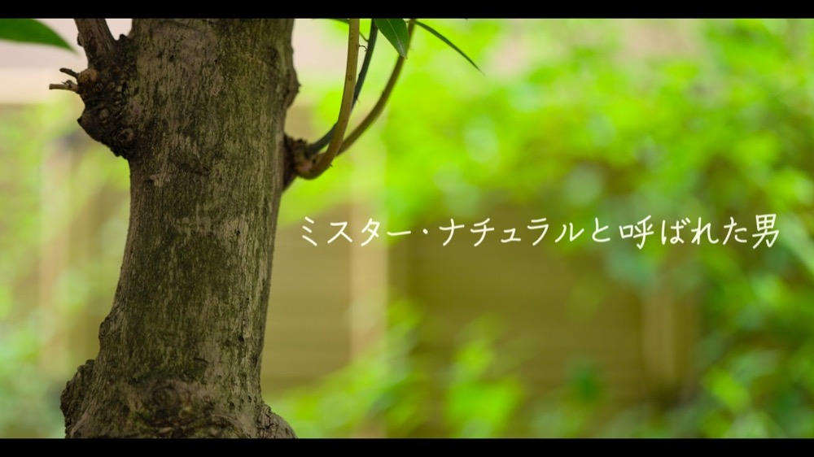

真荷舟 1st Album「Rainmaker」
収録曲：In this Life / 希望の種子 / 花 / Rainmaker / Jungle Wild Spirits / I'm Calling You / 同じ空の下、同じ星の上 / この智慧の果てるまで
榎田竜路(Vo,Gt) / 阿部拓也(Ds,Perc) / 鈴木亨(B,Perc)
Special Guest：岡田凖(G.Solo) on "In This Life"
picture by Shinichi Nagaoka

田口みさき 1st Album「in focus」
シンガーソングライター田口みさき待望のファーストアルバム。全曲作詞作曲する彼女の温かな歌声と、多彩なバンドサウンドが聴く人を魅了する。注目の若手アーティスト。
田口みさき(Vo,Pf) / 石川哲也(Eb) / 辻村崇(Ag) / 森田章(Wb) / 深野雄一(Per) / 阿部拓也(Ds)
2017年4月1日発売

新垣隆 交響曲《連祷 -Litany-》
DECCAより配信された新垣隆の交響曲作品集。「交響曲《連祷-Litany-》」「ピアノ協奏曲《新生》」「流るる翠碧」を収録。ピアノ・指揮：新垣隆、東京室内管弦楽団(阿部はスネアドラムを演奏)。
録音：2016年9月15日 福島市音楽堂(Live Recording)
新垣隆 Official Website →

黄裕翔 Huang Yu-Hsiang plays Ryuji Enokida
台湾を代表する盲目の若手ピアニスト、黄裕翔(ホアン・ユィシアン)と、日本の作曲家、榎田竜路。アジアの二人の音楽家が出会い生み出した作品集。阿部拓也はプロデューサーとして本作の制作に参加。全国無料放送のBS12ch「未来への教科書〜For Our Children〜」挿入曲を含む全11曲。
Pianist 黄裕翔 / Composer 榎田竜路 / Producer 阿部拓也
2014年発売


映画「フレームをこえて」Beyond the Frame
監督:蒋雯 プロデューサー:呉楽 出演:伊藤梢 / 坂城日日 / 裕菜 音楽:阿部拓也。企画・製作:株式会社Plum Studio
2023年7月30日公開
井上雅人デビュー15周年記念「愛の夢 Liebesträume with PETROF」
シューマン、リスト、ブラームス、マーラー、R.シュトラウス、モーツァルト、ベッリーニ、ヴェルディの歌曲・オペラアリアを収録した限定版CD(日本語対訳付き)。レコーディングエンジニアとして参加。